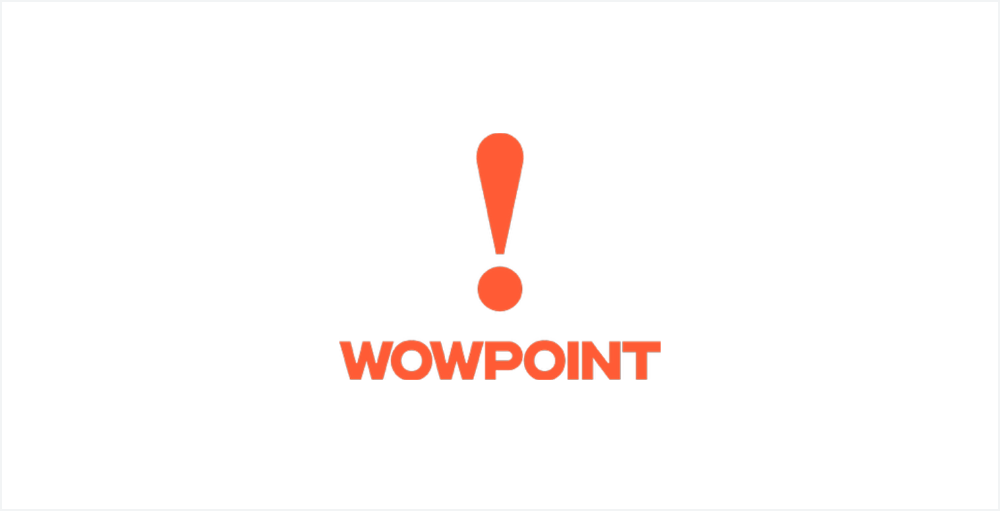
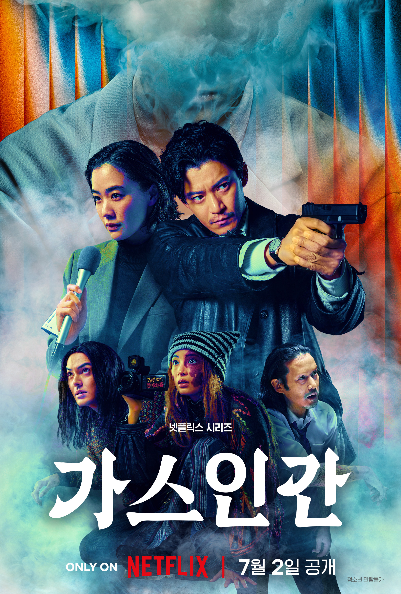

Q. 그동안 글로벌 프로젝트 중심으로 작업을 많이 해 오신 것으로 알고 있다. 지금의 영화제작사 ‘WOWPOINT’를 설립하게 된 계기는 무엇인지 소개 부탁드린다.
(양) 원래는 방송사에서 콘텐츠 해외 판매와 수급, 그리고 IP 사업 관련 업무를 하다가 프로듀서로 전향한 케이스다. 당시에는 기획 PD라는 직함이 많지 않았다. 영화 쪽 배경을 가진 것도 아니어서 어떤 프로듀서가 되어야 나만의 장점을 살릴 수 있을까 고민을 많이 했다. 그런데 마침 제가 처음 일을 시작할 때 일본에서 한류 부흥기가 찾아왔고, 방송사 해외 판매 담당자로서 기획 단계부터 참여할 수 있는 기회들이 생겼다. 그때 사업적인 측면도 재미있었지만, 프로듀서로서 크리에이티브와 어우러져 일할 수 있겠다는 생각이 들었다. 또한 미국권과 일본에서 일해 왔기 때문에 언어적으로나 경험적으로도 강점이 있었다.
회사를 설립하기 전에 여러 경험을 했다. 일본에서 한국 콘텐츠가 영원히 끝나지 않을 것처럼 팔리다가 외교적 이슈로 한순간에 거품이 꺼져버리는 것을 겪었고, 이후 중국과의 거래가 활발해져 일본 판권의 공백을 메웠으나 사드 이슈로 다시 셧다운 되었다. 그러다 한국에 넷플릭스가 등장했고 매우 빠르게 한국 시장에 자리를 잡았다.
이런 시장 상황이 매우 위태로워 보였다. 뛰어난 크리에이티브와 완성도 높은 콘텐츠로 이야기를 전달하는 경쟁력을 갖추었음에도, 물리적인 내수 시장 규모의 한계로 인해 상승한 인건비와 제작비를 국내 산업 구조 안에서는 도저히 감당할 수 없게 되었다. 이럴 때 단순 수출에만 의존하지 않고, 파트너십이나 사업적 연계를 통해 시장을 확장해 나갔으면 좋겠다고 생각했다.
그런 방향성으로 커리어를 쌓아오며 구체화한 결과물이 바로 ‘WOWPOIN’라는 회사다. 핵심 크리에이티브가 탄탄해야 하고, 이는 훌륭한 크리에이터들과의 파트너십에서 나온다고 믿는다. 이렇게 국내 기반을 탄탄히 다지면서 이를 해외로 어떻게 확장할 수 있을지 고민하고자 시작한 것이 지금의 ‘WOWPOINT’다.
Q. 연상호 감독님과 작업을 많이 하는 것 같다. 어떻게 함께 작업하게 되었는가? 그리고 와우포인트와 함께한 작품들은 무엇인가?
(양) 회사 설립 무렵 연상호 감독님께서 해외에서 러브콜을 많이 받으시던 때였다. 하지만 자체 제작사나 전속 계약된 제작사가 없어 안정적인 파트너십을 맺고자 하는 니즈가 있으셨다. 처음에는 옆에서 조금씩 돕다가, 제가 회사를 설립해 해외 쪽 프로듀싱을 본격적으로 해보고 싶으니 관심이 있으시면 함께하자고 제안해 설립 초기부터 지금까지 함께하고 있다.
WOWPOINT를 설립하고 가장 먼저 계약한 작품은 〈가스인간〉이었다. 다만 대중에게 가장 먼저 공개된 작품은 넷플릭스 시리즈 〈선산〉이었다. 웹툰 〈선산〉은 저희가 별도로 제작했다. 당시는 코로나19가 한창이던 시기라 영화 기획이 쉽지 않아, 우선 실행 가능한 작업에 집중하고자 주로 OTT 플랫폼과 협업했다.
연상호 감독님이 굉장히 아이디어도 많고, 아이템을 많이 가지고 계셨는데 혼자서 A부터 Z까지 모든 작품을 다 하기에는 물리적으로 한계가 있다고 생각했다. 그래서 회사가 있는 의미를 좀 더 드리고 싶어서 <선산>과 <가스인간> 제작에 미국 쇼러너 시스템을 도입했다. 감독님이 굉장히 성실하시고, 멀티가 되는 크리에이터이기 때문에 본인 연출 작품을 진행하시면서 해당 작품들의 기획, 각본 작업과 크리에이티브 관리 작업을 같이 하는 게 가능했다.
Q. <선산>을 웹툰으로 따로 제작한 이유가 있는가.
(양) 글로벌 OTT와의 협업은 훌륭한 파트너십이자 기회이지만, IP를 모두 양도해야 한다는 점이 가장 큰 고민이었다. 모든 기획과 IP, 그리고 사업적 확장 가능성까지 넘겨주어야 하는 계약 구조가 무척 아쉬웠다. 그래서 〈선산〉의 경우 OTT 시리즈 제작 전에 웹툰으로 먼저 제작했다. IP의 권리는 제작자와 크리에이터가 직접 쥐고 있는 것이 무엇보다 중요하다고 생각한다.
Q. 그동안 다양한 글로벌 영상 콘텐츠 프로젝트를 기획·제작해 오면서, 국내외 제작 및 투자 환경의 변화를 몸소 겪었을 것 같다. 제작자 입장에서 체감하는 글로벌 프로젝트 환경의 가장 큰 변화는 무엇이라고 보는가.
(양) 코로나19 이후 투자 환경이 위기에 처했다고 이야기하는 경우가 많다. 하지만 사실 변화는 그전부터 시작되었다고 본다. 개인적으로는 코로나19 이후 영화 산업이 위기에 처했다기보다는 일종의 변곡점을 맞이한 것에 가깝다고 생각한다. 팬데믹은 단지 변화를 가속화 한 계기였을 뿐이라고 본다.
결국 이 산업은 관객이 무엇을 보고 싶어 하는지, 즉 수요에 의해 결정되기 때문에 시장의 외형만으로는 설명할 수 없는 부분이 분명히 있다. 요즘 감사하다고 생각하는 점은 젊은 관객층이 다시 영화관으로 돌아오는 추세가 보인다는 것이다. 극장들이 하나둘 문을 닫는다는 기사를 볼 때마다 안타깝지만, 한편으로는 관객이 진정으로 원하고 필요로 하는 콘텐츠를 시장에 어떻게 재분배할지 고민해야 할 시점이 아닌가 싶다. 그에 발맞춰 투자의 형태도 조금씩 변해가는 과도기다. 한동안 대기업 투자배급사들이 투자에 소극적이어서 어려움이 컸지만, 그런 환경에 적응하기 위해 ‘우리가 지금 무엇을 할 수 있을까’를 치열하게 고민하며 시도했던 작품이 바로 영화〈얼굴〉이었다. 이러한 시도들을 통해 업계 전체가 새로운 해법을 찾아가는 과정이라고 생각한다. 투자 환경 역시 마찬가지다. 시장은 언제나 수요와 공급의 원리로 작동하기에 글로벌 프로젝트 또한 그러한 고민과 여정 속에서 해답을 찾아가고 있다.
한국 콘텐츠는 글로벌 OTT의 등장으로 급격한 시장 변화를 겪었지만, 역설적으로 그 덕분에 전 세계 시장에서 매우 자연스럽게 소비되는 기반을 마련했다. 게다가 K-팝이라는 막강한 산업과 맞물리면서, 한국어로 제작된 콘텐츠를 향유하는 데 대한 심리적 장벽이 그 어느 때보다 낮아졌다. 그렇기 때문에 해외 시장에서도 한국 프로듀서 및 창작자들과의 협업에 유례없이 호의적이고 긍정적인 반응을 보인다.
이러한 흐름이 이어지는 골든타임에 단단한 파트너 네트워크와 인프라를 선제적으로 구축해 두어야 한다. 또 다른 트렌드가 언제든 지금의 자리를 대신할 수 있기 때문에, 현재의 기회를 어떻게 전략적으로 활용하느냐가 대단히 중요하다. 투자 환경의 변화 역시 궁극적으로는 이러한 흐름 안에서 유기적으로 움직이고 있다고 본다.
Q. 글로벌 프로젝트 할 때 겪는 국가 간 문화적인 차이를 어떻게 해결하는 편인가.
(양) 사실 문화적 차이를 단번에 해결하기란 쉽지 않다. 현재 일본, 미국과 진행 중인 기획까지 포함하면 10여 개의 프로젝트를 가동하고 있다. 그중 가장 먼저 착수했고 대중에게 첫선을 보인 작품이〈가스인간〉이었다. 최근 넷플릭스 재팬과 함께한 <기생수: 타미야>는 촬영을 마치고 후반 작업을 진행 중이다.

(출처: Netflix)
현장에서 일하면서 절감하는 점은, 큰 틀에서는 같은 영상 제작일지라도 세부적인 영역으로 들어가면 국가마다 미세하게 다른 부분이 너무나 많다는 사실이다. 이는 맞고 틀림이나 옳고 그름의 문제가 아니라 제작 방식과 문화의 차이라고 생각한다. 각국의 문화, 산업 구조, 역사적 배경을 들여다보면 그 방식마다 저마다의 타당한 이유가 존재한다. 따라서 글로벌 협업에서 가장 중요한 것은 ‘서로의 다름을 명확히 인지하는 태도’다. 나에게는 숨 쉬듯 당연한 관행이 상대방의 문화적 맥락에서는 전혀 당연하지 않을 수 있기 때문이다. 촬영 현장은 물론이고 비즈니스 협상이나 크리에이티브 회의에서도 시각차가 극명하다. 예컨대 대사 한 줄을 수정하는 방식조차 문화적 배경에 따라 매우 다르기 때문에, 사소한 오해가 누적되고 제때 해소되지 않으면 큰 갈등으로 번질 수 있다. 계약과 같은 기술적인 측면은 서류를 바탕으로 조율해 나가면 되지만, 눈에 보이지 않는 문화적 간극은 직접 부딪쳐 겪어보지 않고는 알 수 없다. 끊임없는 소통을 통해 서로의 차이를 이해하는 것 외에는 방법이 없다고 생각한다.
Q. 한일 양국이 공동 제작을 했을 때 한국과 일본 시청자를 모두 의식하지 않을 수 없을 것 같다. <가스 인간>을 제작할 때 실제로 어땠는지 궁금하다.
(양) 콘텐츠를 기획할 때 ‘어디에서 유통할 것인가’, 그리고 ‘누구에게 보여줄 것인가’를 명확히 정의하는 작업이 매우 중요하다. 저 역시 매 순간 고민하는 지점이지만, 이 역시 정해진 정답은 없다. 다만 한 가지 확실한 원칙은 ‘무리한 욕심을 부리지 않는다’는 것이다. 글로벌 프로젝트라는 이유로 ‘한일 합작이니 한국과 일본 관객을 모두 잡겠다’는 식의 접근은 가장 위험하다고 본다. 실제로 양쪽을 모두 만족시키려다 양국 모두에서 외면받은 합작 사례가 적지 않았다. 양국의 문화적 코드가 엄연히 다른 상황에서 모두의 입맛에 맞추려 들면 작품 특유의 뾰족한 개성과 엣지가 무뎌질 수밖에 없다. 메인 타깃 시장을 명확히 설정하고 그곳에서 먼저 성공을 거두어야 비로소 글로벌 관객에게도 설득력을 얻을 수 있다. 이도 저도 아닌 어정쩡한 타협이야말로 가장 경계해야 할 선택이다.
그렇기에〈가스인간>은 처음부터 철저하게 일본 시장을 1차 타깃으로 명확히 했다. 작품에 한국적 색채가 묻어나는 것은 연상호 감독님이 총괄하고 한국 제작진이 참여했기 때문에 자연스러운 결과라고 본다. 그리고 연출을 맡은 카타야마 신조 감독이 과거 봉준호 감독님의 영화〈마더〉조연출 출신으로 한국 영화에 친숙한 세대라는 점이 복합적으로 작용한 영향도 있는 것 같다. 양국 창작자들의 취향과 환경이 유기적으로 융합되면서 자연스럽게 양국의 결이 배어난 것이지, 우리의 전략적 목표는 언제나 ‘일본 시장 공략 후 글로벌 확장’이라는 단계별 지향점이 뚜렷했다.
솔직히 초기 기획 단계에서는 ‘한국 제작진과 감독이 참여하니 한국 배우도 함께 캐스팅하면 좋지 않을까’ 하는 욕심이 들기도 했다. 하지만 크리에이티브 측면에서 설득력이 떨어지거나 서사상 필연성이 없는데도 억지로 구색을 맞추는 것은 작품의 본질을 흐린다고 판단했다. 제작 과정의 어느 분기점에서 그 욕심을 과감히 내려놓았고, 지금도 그것이 흔들리지 말아야 할 핵심 원칙이라고 확신한다.
Q. 일본은 제작 위원회라는 시스템을 가지고 있는데, 이번 <가스 인간> 제작에도 반영되었는가.
(양) 〈가스인간〉에는 제작위원회 시스템을 적용하지 않았다. 애초에 글로벌 OTT 시리즈를 목표로 기획·제작되었기 때문에 우리 쪽에서 원하지 않았다. 다른 국가와 협업할 때 시스템적 측면에서 보면, 각국 산업이 ‘크리에이티브’를 대하는 태도에 상당한 차이가 있음을 체감한다. 산업의 중심에 무엇이 놓여 있는가, 시스템 자체인가, 투자자인가, 아니면 제작/배급사인가에 따라 창작을 바라보는 관점도 달라진다. 특히 크리에이티브를 대하는 태도의 차이에 따라 기획과 제작의 방식, 진행 순서, 우선순위 등이 크게 좌우된다는 인상을 받았다.
예를 들어, 일본의 제작위원회 시스템은 본래 리스크를 최소화하기 위해 고안된 구조다. 여러 구성원 간에 역할을 분담해 투자 위험을 분산시키기 때문에 제작위원회의 존재감이 매우 크다. 아울러 오랜 세월 대기업들이 시장을 견인해 온 보수적인 생태계이다 보니, 해당 시스템 안에서 굴러가는 것이 무엇보다 중요하게 여겨진다. 그래서 그동안 일본에서는 대부분 이 시스템 안에서 무리 없이 작동할 수 있는 콘텐츠 위주로 제작되어 왔다. 그러다 보니 시스템이 늘 앞단에 있고, 그 위에 크리에이티브를 얹는 구조가 정착되었다.
한국은 순서가 다르다. 크리에이티브가 시스템보다 한발 앞서 있다는 인상을 받는다. 특정 감독의 시나리오가 훌륭하다면, 이를 영상화하기 위해 제작비가 얼마나 필요한지, 어떤 미술감독과 배우가 적합한지를 먼저 고민하며 어떻게든 예산을 유치하고 최적의 캐스팅을 완성하려 애쓴다. 즉, 크리에이티브를 최우선 순위에 두고 투자와 제작 방식을 맞추어 가는 구조다.
반면에 일본은 ‘이 IP로, 이 정도 예산 범위 내에서 영화를 만들자’라는 식의 패키징 중심 접근이 많다. 정해진 틀 안에서 무엇을 구현할 수 있을지 고민하다 보니, 크리에이티브보다는 프로듀서나 시스템이 앞선다. 이는 방송 시장도 마찬가지다. 한국은 대본의 완성도가 곧 드라마의 성패를 가른다고 여겨 작가를 극진히 대우하지만, 일본은 많은 작가가 방송사와 전속 형태로 묶여 있어 여전히 방송사 중심의 수직적 시스템으로 움직인다. 이러한 차이는 결국 양국 영상 산업에 오랜 세월 누적된 고유한 배경과 역사에서 비롯되었다고 본다.
Q. 지금 한일 합작으로 다시 준비하고 있는 <기생수: 타미야>는 <가스 인간>과 합작 방식에 있어 어떤 차이가 있는가.
(양) <가스인간>은 WOWPOINT가 일본의 메이저 배급사 토호(TOHO)와 함께 기획을 진행하며 콘텐츠를 판매하는 방식으로 계약을 맺었다. 이후 토호가 넷플릭스에 최종 판매한 형태다. 따라서〈가스인간〉은 토호와의 파트너십 성격이 짙었다. WOWPOINT와 토호가 사전에 합의한 크리에이티브 틀 안에서 패키징을 완성한 뒤 넷플릭스에 넘겼기 때문에 제작 과정에서의 자율성은 높았던
반면, 넷플릭스 재팬과 직접 긴밀하게 소통할 기회는 상대적으로 적었다. 프로듀서 입장에서는 든든한 현지 파트너와 함께 안정적으로 사업을 전개할 수 있다는 장점이 있었지만, 플랫폼과 직거래하는 경험을 쌓지 못한 점은 다소 아쉬움으로 남았다.
이번〈기생수: 타미야〉같은 경우는 앞서 넷플릭스 한국 오리지널로 선보였던〈기생수: 더 그레이>의 세계관을 잇는 확장판 격이어서, 넷플릭스 재팬과 직접 협업했다. WOWPOINT가 연상호 감독님과 함께 초기 기획을 완성한 뒤 넷플릭스와 직접 계약을 했다. 이후 넷플릭스로부터 순수 제작 예산을 확보하고, 플랫폼과 상호 협의된 일본 현지 제작사(피지컬 프로덕션)를 고용해 실 제작을 진행하는 방식을 취했다.
말하자면 <가스인간>은 토호라는 일본의 제작사와의 협업 형태로 제작하여 그 제작사에서 넷플릭스에 판매한 것이고, <기생수: 타미야>는 넷플릭스 재팬과 저희 WOWPOINT가 직접 거래하여 제작했다는 점에서 차이가 있다.
(출처: Netflix)
Q. WOWPOINT가 지속적으로 글로벌 프로젝트를 성사시키고 이끌어갈 수 있는 가장 핵심적인 역량은 무엇인지 궁금하다.
(양) 시작은 좋은 크리에이티브였던 것 같다. 그런 맥락에서 연상호 감독님이라는 존재가 저희한테는 매우 컸고. 좋은 크리에이터에 좋은 크리에이티브가 있으니 더 목소리를 낼 수 있었다. 그리고 또 다른 핵심 역량은 프로듀서로서의 깊이 있는 문화 이해도라고 본다. 일본과 계속 작업하면서 언어적 장벽없이 직접 소통을 하면서 서로의 문화를 이해해 나간 점이 중요했다. <가스 인간>이 굉장히 오래 걸렸던 이유도 일본과 첫 협업이었던 데다, 토호 역시 OTT 시리즈 제작이 처음이었고 심지어 해외 제작사와 직접 공동 프로듀싱을 진행해 본 경험이 많지 않았기 때문이다. 하지만 좋은 프로듀서를 만나서 5년 동안 서로 부딪히며 서로를 이해해가는 과정을 겪었고, 그러한 파트너십이 서로 좋은 경험으로 남아서 다음 작품으로 연결되는 것 같다. 지금도 토호와 3-4개 정도의 작품을 함께 논의하고 있다.
<기생수: 타미야> 같은 경우도 사실 <기생수: 그레이>의 성공이 가장 큰 동력이었다. 그 성과 덕분에 원작자인 이와아키 히토시 작가와 출판사 고단샤(講談社)의 신뢰를 얻을 수 있었고, 다음 프로젝트가 가능했다.
다만 일본은 넷플릭스 재팬이나 토호 모두 한국과는 일하는 방식이 많이 다르다. 크레이티브 영역에 들어와서 목소리를 내고, 제안을 하고, 컨트롤을 하려고 한다. 왜냐하면 넷플릭스 재팬 프로듀서들이 거의 방송사나 투자배급사 출신이다보니 자연스럽게 일본의 기존의 시스템이 적용되는 것이다. 하지만 우리가 그 산업에 맞춰서만 일을 하면 그들이 한국의 크리에이티브와 협업하는 의미가 무색해질 것이고, 또한 우리가 가지고 있는 재밌고 뾰족한 기획이 무뎌지게 되는 것을 경계해야 한다고 생각했다. 그 타협점을 서로 찾는 것이 함께 일하는데 가장 어려웠던 부분이기도 했다. 끊임없이 서로 논의의 과정을 반복했다. 그런 경험을 호되게 겪으면서 <기생수: 타미야>를 제작할 때도 어떻게 하면 크리에이티브를 좀 더 지켜가면서 제작할 수 있을까를 항상 고민했다.
Q. 제작비 상승으로 인한 ‘제작 효율화’는 글로벌 시장에서도 중요한 이슈다. 글로벌 프로젝트 현장에서는 이러한 문제에 어떻게 접근하고 있는가.
(양) 꾸준히 작품을 만들 수 있는 환경을 만들어 나가는 게 프로듀서로서는 굉장히 중요하다. 영화가 계속 만들어지고, 그 영화가 수익을 내야 그 수익으로 투자자들이 다시 투자를 할 것이고, 그래야만 지속적으로 일자리를 만들어 낼 수 있다. 이러한 선순환 구조가 정착이 되어야 비로소 같이 일하는 스태프들과 어떻게 하면 더 좋은 환경에서 일할 수 있을까 고민할 수 있다.
예를 들어 이번 <기생수: 타미야>에 같은 세계관을 가진 한국의 <기생수: 더 그레이>와 톤 앤 매너를 맞추는 게 중요하다고 생각해서, 당시에 함께 했던 한국의 VFX 회사와 함께 일본에서 작업했다. 다음에 하는 합작도 최대한 많은 한국 스태프와 함께 하려고 한다. 지금까지 한일합작을 하면서 각본 집필에서 크리에이티브 총괄, 기획, 그리고 실 제작을 책임지는 피지컬 프로덕션 단계로 점진적 확장을 이뤄냈다. 우리의 크리에이티브를 지키면서, 어떤 형태로 이 시장에 진입할 수 있을지 고민하면서 레벨을 바꿔가면서 계속 시도를 해보는 것이다. 직접 부딪혀서 해보지 않으면 모르는 영역이기 때문이다.
그런데 결국은 시장 논리에 의해서 우리가 받은 것 이상의 가치를 해줄 수 있는 팀이 되어야 또 다음 영화를 같이 하자고 할 것이다. 그러기 위해서는 그 시장을 잘 이해하는 게 중요하다. 100억 원 제작비가 투입되어야 할 작품이더라도 이 시장이 100억짜리 시장이 아니라 70억 원 시장이라면 그 안에서 크리에이티브를 지켜내면서 제작을 해낼 방법을 찾아 줄 수 있는 제작자가 되고 싶다. 시장의 여건을 이해하면서 융통성 있게 움직일 수 있는 팀이 되어야 격변하는 산업 안에서, 그리고 다양한 여건의 글로벌 시장에서 꾸준하게 좋은 작품을 만들어나갈 수 있지 않을까 생각한다. 감사하게도 감독님과 스태프들이 오랜 기간 연속해서 작품을 해오다 보니까, 그런 의지를 가지고 맞춰주시고 같이 해 주시고 있다. 사실 효율화라는 건 산업적인 얘기라서 굉장히 어려운 문제다.
Q. 결국 지속적인 협업을 통해 독보적인 크리에이티브 경쟁력을 입증하면서, 시장 내 영향력을 단계적으로 확장해 나가는 과정으로 이해하면 되는가.
(양) 냉정하게 보면 한국 제작진은 해외 시장에서 ‘아웃사이더’다. 할리우드, 일본 모두 마찬가지다. 아무리 대단한 크리에이터라고 하더라도 그들 입장에서는 함께 할 이유가 필요하다. 왜냐하면 글로벌 프로젝트는 문화적, 언어적 차이로 인해 보통 한국에서의 작업보다 기본적으로 두세 배 이상의 시간과 노력과 힘듦이 들어가는데, 그 부침을 그들도 똑같이 느끼기 때문이다.
그래서 한국 크리에이터와 한국 제작진과 함께 해야만 하는 설득력 있는 이유를 주는 것이 중요하다. 그래야만 지속적인 파트너십을 이어갈 수 있고, 그러면서 그 안에서 조금씩 우리의 자리를 잡아나갈 수 있다. 사실 한 번은 해볼 수 있다. 하지만 그 한 번의 작업이 그만한 가치가 없다고 생각해 버리면 아웃사이더에게 다음의 기회는 없다. 그래서 글로벌 프로젝트는 그 정도의 각오와 의지는 필요한 것 같다.
Q. 글로벌 경쟁력 강화를 위해서 어떤 정책적인 지원이 필요하다고 보는가.
(양) 정말 어려운 질문이다. 현업 실무에서 지금 당장 글로벌 프로덕션을 하는 데 있어서 제일 필요한 건 재정 지원금이다. 그 중 가장 기본적인 건 로케이션 인센티브 지원이다. 해외 프로덕션을 국내로 유치하거나, 반대로 우리가 해외로 나가 촬영할 때 지출한 제작비의 일부를 환급받을 수 있어야 비로소 단가 경쟁력을 확보할 수 있기 때문이다. 이는 해외 파트너와 협업을 논의할 때도 최우선으로 검토되는 조건인 만큼, 정책 차원의 깊이 있는 고민이 절실하다.
국내에도 지자체 영상위원회 차원의 지원제도가 마련되어 있어 영화 <군체> 제작 당시 춘천 세트장에서 촬영을 진행할 수 있었다. 그런데 국제 공동제작 때는 어려운 부분이 있다. 제가 글로벌 프로젝트를 진행하며 가장 실현하고 싶은 모델은 해외 프로덕션 물량의 상당 부분을 국내로 끌고 와 한국 스태프들과 작업하는 것이다. 한국 내에 최적화된 세트를 짓고 우리 제작진과 크리에이티브 역량을 최대한 투입하는 방향으로 접근하고자 한다. 그 과정에서 국내 스태프들에게 정당한 인건비를 보장하면서도, 해외 현지에서 직접 제작하는 것보다 전체 제작비 측면에서 훨씬 유리한 구조를 만들어내는 정책적 유인책이 절실하다.
Q. 현재 일본과 주로 협업하고 있는데, 일본 외에 다른 시장과의 프로젝트 계획도 있는가.
(양) 아직 미국에서 첫 삽을 못 떠서 그렇지 계속 오가며 진행하고 있다. (아직까지 프로젝트 성사가 이루어지지 않은 이유는) 미국도 시장이 너무 격변하면서 어렵기도 했고, 일본에 비해 지리적으로 멀다는 물리적인 이유도 있는 것 같다. 어쨌든 계속 부딪히고 있다.
최근에는 동남아시아와 함께 할 수 있는 프로젝트를 좀 적극적으로 검토하고 있다. 특히 태국, 인도네시아, 말레이시아, 베트남을 주목하고 있다. 이들 국가는 장르물이 잘 통하는 시장이기도 하고, CJ ENM이 극장 체인으로 들어가 있기도 하다. 동시에 인구수 등을 봤을 때 시장 규모가 기대가 되기도 하다. 무엇보다 영화 소비가 적극적으로 이루어지고 있는 곳들이다. 실제로 연상호 감독님의 좀비물인 <군체>가 동남아시아에서 전체적으로 박스오피스가 굉장히 좋았다. 사실 시스템이나 체제에 아직은 적응이 덜 되어서 가장 날 것의 크리에이터들이 많을 것 같은 시장이라고 생각하고 있다.